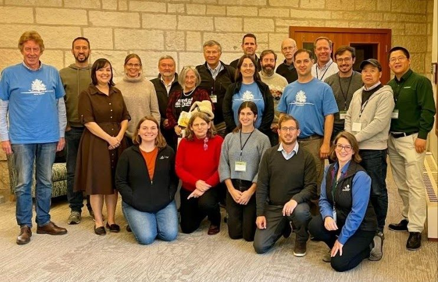

Est. 1973 · Arboriculture & urban forestry

Fifty-two rings and counting.
The Arboricultural Research and Education Academy helps researchers, faculty, and students grow the science of trees — and carry it out of the lab and into the canopy.
One ring for every year · 1973 → today
What we do
We help the science of trees travel.
Since 1973, the Academy has supported faculty, students, and researchers as they conduct and share arboricultural and urban forestry research.
We connect the scientists and educators working across the biological, ecological, and social sciences of the urban forest — so a finding made in one place can take root in another.
Where the work goes
The leaf and the microscope.
Our mark carries both — a tree and the science that studies it. The work follows the same two threads, plus the people who keep them growing.
Studies worth sharing
Backing the work that shows how trees live, fail, and thrive in cities — and getting results to the people who plant and tend them.
Explore research →Evidence, in the open
A quarterly newsletter and a members' archive that move new findings, methods, and questions through the field as they emerge.
Explore research →The next generation
Training the arborists, scientists, and urban foresters who'll read the rings after us — through events, mentorship, and shared teaching.
Explore education →The people
A field, not an island.
The Academy is the researchers, educators, and students who show up for it — at meetings, in the newsletter, and across the urban-forest sciences. The board meets every month to keep the mission growing.
Join the academy
Membership
Add a ring.
Your membership gives arboriculture and urban forestry education a voice — and funds the activities that keep the field growing. Pick the ring that fits.
Still in the field-guide stage
Discounted membership, the quarterly newsletter, and a foothold in the research community while you study.
See student membership →Already in practice
Full access, the members-only newsletter archive, and a say in where the Academy puts its energy next.
See professional membership →The newsletter
A quarterly read for people who think about trees on purpose.
Articles on educational events and professional development, plus announcements for scholarships, fellowships, and higher-ed job openings in the field.
Full archive open to membersGet in touch
Questions? Email is best.
We check the inbox regularly, and the board meets every month to keep the Academy's work moving. Reach out and we'll point you the right way.
area.arbor@gmail.com